Tour of Go - Expansion Pack
Presenter Notes
Press H to show help.
October 2020
Presenter Notes
Stack Overflow Developer Survey 2020
Presenter Notes
Most Loved Languages
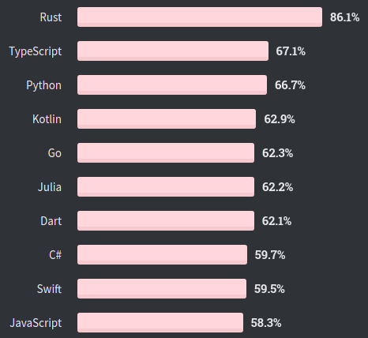 % of developers who are developing with the language or technology and have expressed interest in continuing to develop with it
"We also see big gains in Go, moving up to 5th from 10th last year."
Presenter Notes
Most Wanted Languages
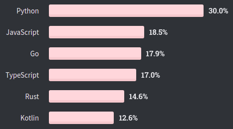 % of developers who are not developing with the language or technology but have expressed interest in developing with it
Presenter Notes
Top Paying Technologies
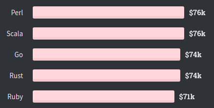 Median of 33,534 responses; USD
Presenter Notes
Correlated Technologies
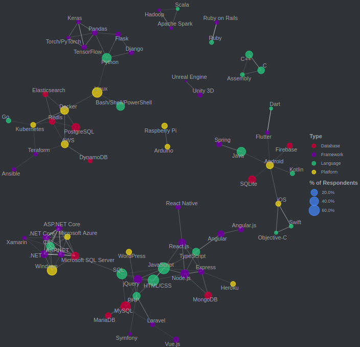
Presenter Notes
Golang
- First appeared in 2009
- statically typed
- compiled (compiler written in Go itself)
- garbage-collected
- explicit support for concurrent programming
- open source
- easy to learn, hard to master
Presenter Notes
Golang: pros (1)
- simplicity, ease of use
- fast (at runtime)
- fast compilation, compiled directly to binary (Go was developed while waiting for a C++ program to compile)
- functional programming support
- goroutines
- channels
- mutliple return values
- deferred statements
- error handling
Presenter Notes
Golang: pros (2)
- garbage collector (low latency)
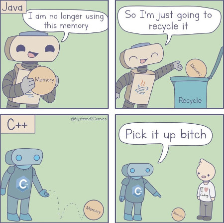
Presenter Notes
Golang: pros (3)
- nice built-in tools: dependency management, go test, benchmarks, code formatter, static code analysis, godoc
- idiomatic approach (e.g. code format)
- rich community libraries
- easy custom packages publishing
- type embedding
- variadic functions
- profiling tools
- potential race condition detection
- tags: easy yaml/json marshal
Presenter Notes
Golang: cons
- No generic types
- Code duplication: boilerplate code for constructors, simple conversions, collection operations (mapping, filtering, getting keys from map)
- Garbage Collector introduces Stop-the-World (no manual memory management)
- still in development
- Simple operations are complicated (not memorable)
- no optional parameters
- many traps
- implicit interfaces makes refactoring harder
- hardcoded mutability
Presenter Notes
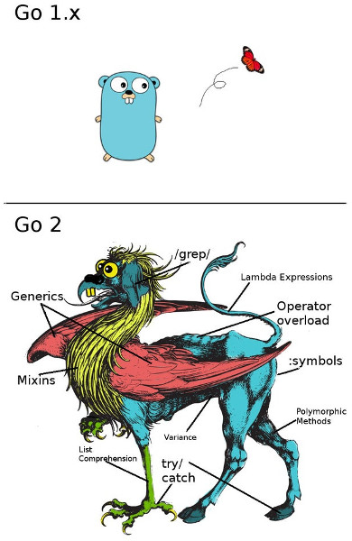
Presenter Notes
Basics Repetition
Presenter Notes
Tour of Go
- Tour of Go: https://tour.golang.org/
- Go Playground: https://play.golang.org/
- An Introduction to Programming in Go
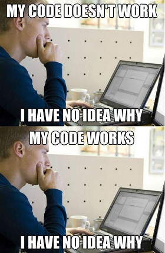
Presenter Notes
Tour of Go (2)
What's missing in Tour of Go?
- Go by Example: https://gobyexample.com/
- Effective Go: https://golang.org/doc/effective_go.html
- Language Specification: https://golang.org/ref/spec
Presenter Notes
Concurrency vs Parallelism

Presenter Notes
Goroutines vs Threads
Goroutines:
- managed by the Go runtime (not by OS kernel)
- not hardware dependent
- typically have 8kB of stack size (threads have fixed 1-2 MB) and can grow up
- easy communication medium (channels) with low latency
- doesn't have ID, doesn't have Thread Local Storage
- very cheap setup & teardown cost (OS is not aware of goroutines)
- cooperatively scheduled (not preemptively), switching cost is low - only 3 registers (50 registers for threads) need to be switched
Presenter Notes
Goroutines threats
1 2 3 4 5 6 | go Listen("0.0.0.0:8080") var network string go func(address string) { Listen(network, address) }("0.0.0.0:8080") |
- unsynchronized access, data race
- losing returned value
- deadlock
- goroutines leak
Presenter Notes
Share by Communicating
Don't communicate by sharing memory;
share memory by communicating
Presenter Notes
Error handling
 Copy-pasting "
Copy-pasting "if err != nil {" everywhere in Go
Presenter Notes
Error handling: wrapping context
1 2 3 4 5 6 7 8 9 10 11 12 13 14 15 16 17 18 19 20 21 22 23 24 25 | import ( "github.com/pkg/errors" log "github.com/inconshreveable/log15" ) func doSomething() (*string, error) { result, err := getResult() if err != nil { return nil, errors.Wrap(err, "unable to initialize") } return result, nil } ... log.Error("initialization error", log.Ctx{ "error": err, }) ... ERROR[08-21|15:54:09] initialization error caller=run.go:26 error="unable to initialize: Error when configuring server: unable to create authentication component: failed to initialize keystone client: failed to initialize Keystone v3: failed to authenticate gophercloud client: Post \"http://10.0.50.2:5000/v3/auth/tokens\": net/http: request canceled while waiting for connection (Client.Timeout exceeded while awaiting headers)" |
Presenter Notes
Go compiler errors
The presence of an unused variable may indicate a bug. Go refuses to compile programs with unused variables or imports, trading short-term convenience for long-term build speed and program clarity
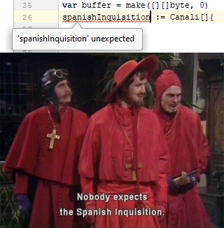
Presenter Notes
Godoc (1/2)
1 2 3 4 5 6 7 8 | // Fprint formats using the default formats for its operands // and writes to w. // Spaces are added between operands when neither is a string. // It returns the number of bytes written and // any write error encountered. func Fprint(w io.Writer, a ...interface{}) (n int, err error) { ... } |
Generate godocs:
go get -v golang.org/x/tools/cmd/godoc
godoc -http=:6060
Presenter Notes
Godoc (2/2)
Minimalistic approach:
- Subsequent lines of text are considered part of the same paragraph; you must leave a blank line to separate paragraphs.
- Pre-formatted text must be indented relative to the surrounding comment text
- URLs will be converted to HTML links
- Interface methods & unexported implementation types are not documented (WTF?)
- Can only create a documentation for all go files in GOPATH (workaround: open localhost:6060/pkg/)
Example: io.Reader
Presenter Notes
Strict formatter
1 2 3 4 5 | l := []string{ "Trailing", "comma", "is cool", } |
- Go enforces using trailing commas
- Doesn't require
()aroundif:if err == nil { go fmtreformats code to tabulated
Presenter Notes
Slice
Slice is a dynamically-sized, flexible view into the elements of an array. Slice consists of:
- pointer to first element in array
- length
- capacity

1 | texts := make([]string, 0, 3) |
Presenter Notes
Type assertion vs conversion
Presenter Notes
Type assertion
For an expression x of interface type and a type T, the primary expression
x.(T)
asserts that x is not nil and that the value stored in x is of type T. The notation x.(T) is called a type assertion.
A type assertion used in an assignment or initialization of the special form
v, ok = x.(T)
yields an additional untyped boolean value. The value of ok is true if the assertion holds. Otherwise it is false and the value of v is the zero value for type T. No run-time panic occurs in this case.
Presenter Notes
Type conversion
A conversion changes the type of an expression to the type specified by the conversion. A conversion may appear literally in the source, or it may be implied by the context in which an expression appears.
An explicit conversion is an expression of the form T(x) where T is a type and x is an expression that can be converted to type T.
uint(iota) // iota value of type uint
float32(2.718281828) // 2.718281828 of type float32
complex128(1) // 1.0 + 0.0i of type complex128
float32(0.49999999) // 0.5 of type float32
float64(-1e-1000) // 0.0 of type float64
string('x') // "x" of type string
MyString("foo" + "bar") // "foobar" of type MyString
string([]byte{'a'}) // not a constant: []byte{'a'} is not a constant
(*int)(nil) // not a constant: nil is not a constant, *int is not a boolean, numeric, or string type
int(1.2) // illegal: 1.2 cannot be represented as an int
string(65.0) // illegal: 65.0 is not an integer constant
Presenter Notes
Non-Blocking Channel Operations
1 | channel <- msg |
1 2 3 4 5 6 | select { case channel <- msg: fmt.Println("sent message", msg) default: fmt.Println("no message sent") } |

Presenter Notes
Type embedding
Go does not provide the typical, type-driven notion of subclassing, but it does have the ability to “borrow” pieces of an implementation by embedding types within a struct or interface.
There's an important way in which embedding differs from subclassing. When we embed a type, the methods of that type become methods of the outer type, but when they are invoked the receiver of the method is the inner type, not the outer one.
1 2 3 4 5 6 7 8 9 | type ReadWriter interface { Reader Writer } type ReadWriter struct { *Reader // *bufio.Reader *Writer // *bufio.Writer } |
Presenter Notes
Type embedding (2)
1 2 3 4 5 6 7 8 9 10 11 12 13 14 15 16 17 18 19 20 21 22 | type Rick struct { morty string } func (r Rick) whoAmI() { fmt.Println("Rick Sanchez") } type PickleRick struct { Rick pickles int } func (r PickleRick) whoAmI() { fmt.Println("I'm a pickle!") } rick := PickleRick{Rick: Rick{morty: "evil Morty"}, pickles: 1} fmt.Println(rick) fmt.Println(rick.morty, rick.Rick.morty) rick.whoAmI() rick.Rick.whoAmI() |
Presenter Notes
Type embedding vs inheritance
"Prefer composition over inheritance"
Type embedding in Go disguises composition as inheritance.
Inheritance usually gives us:
- Extending - borrowing implementation from another class
- Polymorphism - can be achieved in Go using Interfaces
- Ovverriding - supported in Go, but not quite like in OOP languages (no_parent_method_override.go)
Presenter Notes
Type aliases
structs, interfaces are just type aliases (type_alias.go):
1 2 3 4 5 6 7 8 9 10 11 12 13 14 15 16 | // type alias type bignumber int64 // struct type Empty struct{} type Address struct{host string} type Address2 struct{ host string } // interface type I interface{} type I2 interface{ match(input string) bool } // func type Matcher func(input string) bool type Matcher2 func(input struct{host string}) bool |
Presenter Notes
Evolution of a Go Programmer
Presenter Notes
Evolution of a Go Programmer
Junior Go programmer
1 2 3 4 5 6 7 8 9 10 11 | package fac func Factorial(n int) int { res := 1 for i := 1; i <= n; i++ { res *= i } return res } |
Presenter Notes
Evolution of a Go Programmer
Functional Go programmer
1 2 3 4 5 6 7 8 9 | package fac func Factorial(n int) int { if n == 0 { return 1 } else { return Factorial(n - 1) * n } } |
Presenter Notes
Evolution of a Go Programmer
Generic Go programmer
1 2 3 4 5 6 7 8 9 10 11 12 13 14 15 16 | package fac func Factorial(n interface{}) interface{} { v, valid := n.(int) if !valid { return 0 } res := 1 for i := 1; i <= v; i++ { res *= i } return res } |
Presenter Notes
Evolution of a Go Programmer
Multithread optimized Go programmer
1 2 3 4 5 6 7 8 9 10 11 12 13 14 15 16 17 18 19 20 21 22 23 24 25 26 27 28 29 30 31 32 33 34 | package fac import "sync" func Factorial(n int) int { var ( left, right = 1, 1 wg sync.WaitGroup ) wg.Add(2) pivot := n / 2 go func() { for i := 1; i < pivot; i++ { left *= i } wg.Done() }() go func() { for i := pivot; i <= n; i++ { right *= i } wg.Done() }() wg.Wait() return left * right } |
Presenter Notes
Evolution of a Go Programmer
Discovered Go patterns
1 2 3 4 5 6 7 8 9 10 11 12 13 14 15 16 17 18 19 20 21 | package fac func Factorial(n int) <-chan int { ch := make(chan int) go func() { prev := 1 for i := 1; i <= n; i++ { v := prev * i ch <- v prev = v } close(ch) }() return ch } |
Presenter Notes
Evolution of a Go Programmer
Fix Go weaknesses with mature solutions
1 2 3 4 5 6 7 8 9 10 11 12 13 14 15 16 17 18 19 20 21 22 23 24 25 26 27 28 29 30 31 32 33 34 35 36 37 38 39 40 41 42 43 44 45 46 47 48 49 50 51 52 53 54 55 56 57 58 59 60 61 62 63 64 65 66 67 68 69 70 | package fac /** * @see https://en.wikipedia.org/wiki/Factorial */ type IFactorial interface { CalculateFactorial() int } // FactorialImpl implements IFactorial. var _ IFactorial = (*FactorialImpl)(nil) /** * Used to find factorial of the n. */ type FactorialImpl struct { /** * The n. */ n int } /** * Constructor of the FactorialImpl. * * @param n the n. */ func NewFactorial(n int) *FactorialImpl { return &FactorialImpl{ n: n, } } /** * Gets the n to use in factorial function. * * @return int. */ func (this *FactorialImpl) GetN() int { return this.n } /** * Sets the n to use in factorial function. * * @param n the n. * @return void. */ func (this *FactorialImpl) SetN(n int) { this.n = n } /** * Returns factorial of the n. * * @todo remove "if" statement. * @todo Maybe we should use a factory or somthing? * * @return int. */ func (this *FactorialImpl) CalculateFactorial() int { if this.n == 0 { return 1 } n := this.n this.n = this.n - 1 return this.CalculateFactorial() * n } |
Presenter Notes
Evolution of a Go Programmer
Senior Go programmer
1 2 3 4 5 6 7 8 9 10 11 12 | package fac // Factorial returns n!. func Factorial(n int) int { res := 1 for i := 1; i <= n; i++ { res *= i } return res } |
Presenter Notes
Evolution of a Go Programmer
Rob Pike
package fac
// Factorial returns n!.
func Factorial(n int) int {
res := 1
for i := 1; i <= n; i++ {
res *= i
}
return res
}
Presenter Notes
Tricks
Presenter Notes
Composite map key
1 2 3 4 5 6 7 8 9 10 11 12 13 14 15 16 17 18 19 | type FlowGroupingKey struct { SrcIp string DstIp string Proto uint32 SrcPort uint32 DstPort uint32 Vni uint32 SrcIf uint32 DstIf uint32 IsFirstDeviceOnRoute bool IsLastDeviceOnRoute bool OverlaySrcIp string OverlayDstIp string OverlaySrcPort uint32 OverlayDstPort uint32 OverlayProto uint32 } batch map[FlowGroupingKey]*Flow |
- comparison operators must be fully defined for key type
- slice types not allowed
Presenter Notes
pprof CPU profiling
-
Start CPU profiler (profileme.go). Gather data...
1 2 3
cpuProfile, _ := os.Create("cpuprof.prof") pprof.StartCPUProfile(cpuProfile) defer pprof.StopCPUProfile()
-
Open pprof server. View flamegraph on http://localhost:8080:
1go tool pprof -http=:8080 cpuprof.prof
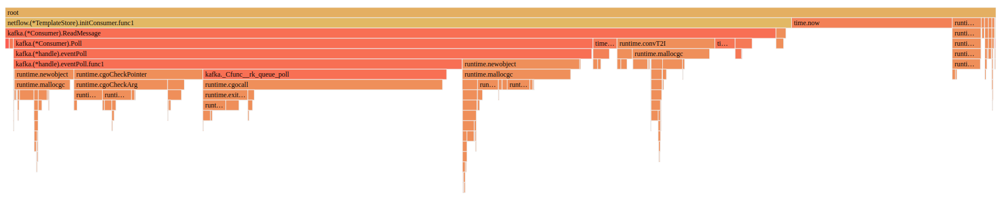
Presenter Notes
Enum
1 2 3 4 5 6 7 8 | type Stereotype int const ( TypicalNoob Stereotype = iota // 0 TypicalHipster // 1 TypicalUnixWizard // 2 TypicalStartupFounder // 3 ) |
Presenter Notes
caching modules in docker
Quicker rebuilds on changes in source code only
1 2 3 4 5 6 7 8 9 | # 1. download dependencies COPY component/go.mod /tmp/mods/ WORKDIR /tmp/mods RUN go mod download # 2. build project COPY component /src/component/ WORKDIR /src/component RUN go get ./... |
- Profitable for frequent code changes with the same dependencies.
- more docker layers
Presenter Notes
go test
Presenter Notes
go test files
- test files ends with
_test.go - located in the same package (folder) as source code
- contains
Test*** functions
Presenter Notes
test flags: Data Race Detector
go test -race race_test.go
enables Data Race Detector (records when and how the memory was accessed, watches for unsynchronized accesses to shared variables)
1 2 3 4 5 6 7 8 9 10 11 12 13 | func main() { c := make(chan bool) m := make(map[string]string) go func() { m["1"] = "a" // First conflicting access. c <- true }() m["2"] = "b" // Second conflicting access. <-c for k, v := range m { fmt.Println(k, v) } } |
Presenter Notes
Ginkgo (1)
Assert float equality
1 | Expect(1.0).Should(BeNumerically("~", 0.999, 0.01)) |
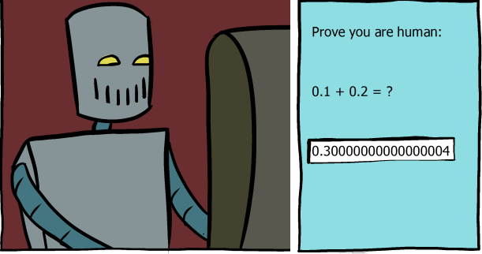
Presenter Notes
Ginkgo (2)
1 2 3 4 5 6 7 8 9 10 11 12 13 14 15 16 17 18 19 20 | var _ = Describe("config exposer tests", func() { BeforeEach(func() { ... }) AfterEach(func() { ... }) It("should expose config", func() { ... }) Specify("should expose config", func() { ... }) FSpecify("should expose config", func() { ... }) }) |
Presenter Notes
Ginkgo (3)
1 2 3 4 5 6 7 8 9 10 11 12 13 14 15 16 17 18 19 20 | It("should expose config", func() { err := doSomething() Expect(err).NotTo(HaveOccurred()) Expect(result).To(BeEqualTo(29000)) Expect(uint64(29000)).To(BeEquivalentTo(29000)) Expect([]int{2, 3, 1}).To(ConsistOf(1, 2, 3)) Eventually(func() uint64 { return atomic.LoadUint64(sentMessages[grpcproto.FlowMessage_sflow]) }, 5*time.Second, 1*time.Second).Should(BeEquivalentTo(2)) }) DescribeTable("failed converting", func(input interface{}) { _, err := UnknownToFloat64(input) Expect(err).To(HaveOccurred()) }, Entry("nil", nil), Entry("untyped string", interface{}("")), Entry("json.Number", json.Number("undefined")), ) |
Presenter Notes
test flags: 1 test in parallel
go test -p 1 - prevents from running multiple tests from directory in parallel
WARNING: Don't confuse it with -parallel flag! You might get completely different results:
- go test doc
- go build doc
go help testdoesn't explain-parallelflag meaning.
Presenter Notes
Benchmarks
The benchmark function must run the target code b.N times. During benchmark execution, b.N is adjusted until the benchmark function lasts long enough to be timed reliably. (crypto_test.go)
go test -bench=. -benchtime=1s crypto_test.go
1 2 3 4 5 6 7 8 9 10 11 12 13 14 15 16 | func BenchmarkSHA256(b *testing.B) { hasher := sha256.New() bs := make([]byte, 1024) _, err := rand.Read(bs) if err != nil { b.Fatal(err) } b.ResetTimer() for i := 0; i < b.N; i++ { hasher.Write(bs) hasher.Sum(nil) } } // Output: BenchmarkSHA256-8 412101 2592 ns/op |
Presenter Notes
Go patterns
Presenter Notes
Async return pattern
1 2 3 4 | func somethingVeryLong(input int) int { time.Sleep(1 * time.Second) return input * 2 } |
Presenter Notes
Async return pattern (2)
1 2 3 4 5 6 7 8 9 10 11 12 13 14 15 16 | func doItAsync(input int) <-chan int { resultCh := make(chan int) go func() { defer close(resultCh) resultCh <- somethingVeryLong(input) }() return resultCh } job1 := doItAsync(1) job2 := doItAsync(10) job3 := doItAsync(21) fmt.Println(<-job1) fmt.Println(<-job2) fmt.Println(<-job3) |
Presenter Notes
Functional options pattern
1 2 3 4 5 6 7 8 9 10 11 12 13 14 15 16 17 18 19 20 21 22 23 24 25 26 27 28 29 30 31 32 33 34 35 36 37 38 39 40 41 42 43 44 45 46 47 48 49 50 51 52 53 54 55 56 57 58 59 60 61 | type Subscriber struct { conn net.Conn rate time.Duration } func New(options ...Option) (*Subscriber, error) { // set defaults p := &Subscriber{ rate: defaultRate, } // apply options for _, opt := range options { err := opt(p) if err != nil { return err } } // validate if p.rate < 0 { return nil, errors.Errorf("negative rate given") } return p, nil } type Option func(*Subscriber) error func WithConnection(conn net.Conn) Option { return func(p *Subscriber) error { p.conn = conn return nil } } func WithAddress(addr string) Option { return func(p *Subscriber) error { conn, err := net.Dial("tcp", addr) if err != nil { return errors.Wrap(err, "unable to connect") } p.conn = conn return nil } } func WithRate(rate time.Duration) Option { return func(p *Subscriber) error { p.rate = rate return nil } } _, err := New( WithAddress("127.0.0.1:5000"), WithRate(5 * time.Second), ) fmt.Println(err) _, err = New() fmt.Println(err) _, err = New(WithRate(-1)) fmt.Println(err) |
Presenter Notes
GO WAT
Presenter Notes
map ordering (1/2)
1 2 3 4 5 6 7 8 9 10 11 | m := map[string]int{ "G": 7, "A": 1, "C": 3, "E": 5, "D": 4, "B": 2, "F": 6, "I": 9, } var order []string for k, _ := range m { order = append(order, k) } fmt.Println(order) |
Presenter Notes
map ordering (2/2)
Outputs random ordering each time:
[F I G A C E D B]
[C E D B F I G A]
[G A C E D B F I]
- no way to enforce same ordering
- this may lead to non-deterministic tests
Presenter Notes
multipart defer (1/2)
1 2 3 4 5 6 7 8 9 10 11 12 | type Dupa struct {} func (d *Dupa) dupa(msg string) *Dupa { fmt.Println(msg) return d } func main() { d := Dupa{} defer d.dupa("2").dupa("3") d.dupa("1") } |
Presenter Notes
multipart defer (2/2)
Examples:
defer profile.Start().Stop()defer startDummyServer("50001").Close()
Presenter Notes
appending copied slice (1/2)
1 2 3 4 5 6 7 8 9 10 11 12 13 14 15 16 | func main() { a := make([]int, 0, 3) b := a fmt.Println("a =", a, len(a), cap(a)) fmt.Println("b =", b, len(b), cap(b)) a = append(a, 1) fmt.Println("---") fmt.Println("a =", a, len(a), cap(a)) fmt.Println("b =", b, len(b), cap(b)) b = append(b, 2) fmt.Println("---") fmt.Println("a =", a, len(a), cap(a)) fmt.Println("b =", b, len(b), cap(b)) } |
Presenter Notes
appending copied slice (2/2)
- reassigning slice creates "shallow" copy:
- shared pointer to real memory,
- cloned size,
- cloned capacity.
explicit copying:
1 2 | b = make([]int, len(a)) copy(b, a) |
Presenter Notes
typed nil (1/2)
1 2 3 4 5 6 | func getValue() interface{} { var a *string = nil return a } fmt.Println(getValue() == nil) |
Presenter Notes
typed nil (2/2)
== nilcompares value & typeniltype is evaluated at compile time.

Presenter Notes
range reusing (1)
1 2 3 4 5 6 7 | values := []string{"dupa1", "dupa2", "dupa3"} for _, val := range values { go func() { time.Sleep(1 * time.Second) fmt.Println(val) }() } |
Presenter Notes
range reusing (2)
Fix by goroutine param:
1 2 3 4 5 6 | for _, val := range values { go func(val string) { time.Sleep(1 * time.Second) fmt.Println(val) }(val) } |
Fix by reassigning:
1 2 3 4 5 6 7 | for _, val := range values { reassigned := val go func() { time.Sleep(1 * time.Second) fmt.Println(reassigned) }() } |
Presenter Notes
range reusing (3)
for ... rangereuses same memory address for next iterations. Don't rely on those pointers!
Presenter Notes
nil map (1/2)
1 2 3 | var m map[string]string fmt.Printf("m['dupa'] = '%s'\n", m["dupa"]) m["dupa"] = "dupa" |
Presenter Notes
nil map (2/2)
- you can read from
nil(gettingnil), but you cannot write (panic)
Presenter Notes
invoking method on nil
1 2 3 4 5 6 7 8 9 10 11 12 13 | type Dupa struct {} func (d *Dupa) print() { fmt.Println("dupa") } func NewDupa() *Dupa { return nil } func main() { NewDupa().print() } |
Presenter Notes
select
select {}
A select statement blocks until at least one of it’s cases can proceed. With zero cases this will never happen. A typical use would be at the end of the main function in some multithreaded programs. When main returns, the program exits and it does not wait for other goroutines to complete.
Beware of for_select.go
1 2 3 4 5 6 7 | for { select { case <- ch: fmt.Println("received") default: } } |
Presenter Notes
goroutines deadlock detection
1 2 3 4 5 6 | func main() { ch := make(chan string) ch <- "dupa" fmt.Println("end") } |
fatal error: all goroutines are asleep - deadlock!

Presenter Notes
panic scope
1 2 3 4 5 6 7 8 9 10 11 12 13 14 | func main() { defer func() { if r := recover(); r != nil { fmt.Println("Recovered in f", r) } }() go func() { panic("dupa") }() time.Sleep(1 * time.Second) fmt.Println("end") } |
Presenter Notes
panic scope (2)
- cant recover panic from other goroutine
- what if you're using 3rd party lib in goroutine? (docker restart policy for the win)
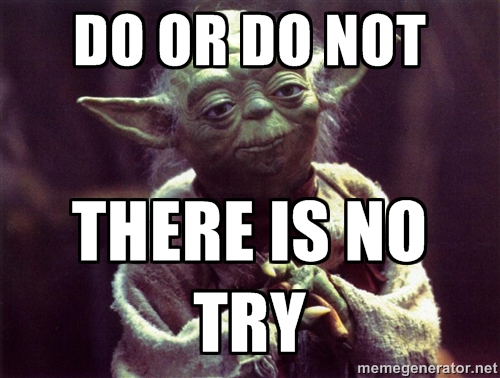
Presenter Notes
strict variadic types
1 2 3 4 5 6 7 8 9 10 | func variadic(elems... interface{}) int { return 0 } func main() { slice := []string{"a", "b"} variadic("a", "b") variadic(slice...) // compilation error // you can do: variadic(slice) - but it's not we meant } |
Presenter Notes
time parsing
1 2 3 4 5 6 7 8 9 10 11 12 13 14 15 16 17 18 19 20 | func main() { // time.RFC3339: "2006-01-02T15:04:05Z07:00" // Mon Jan 2 15:04:05 -0700 MST 2006 // 0 1 2 3 4 5 7 6 t, err := time.Parse(time.RFC3339, "2019-05-02T10:04:00Z") fmt.Println(t) t, err = time.Parse("2006-01-DUPA-02", "2019-05-DUPA-10") fmt.Println(t) t, err = time.Parse(time.RFC3339, time.RFC3339) fmt.Println(err) t, err = time.Parse("2019-05-10T10:04:00", "2019-05-10T10:04:00") fmt.Println(err) // time.Kitchen: "3:04PM" t, err = time.Parse(time.Kitchen, "10:04AM") fmt.Println(t.Format(time.Kitchen)) } |
Presenter Notes
Go Interface headaches
1 2 3 4 5 6 7 8 | type Dao interface { Create(entity *Entity) error Get() []*Entity } func (d *daoMock) Create(entity *Entity) error { return nil } |
Interfaces are implemented implicitly
Go Interface headaches:
- finding classes implementing particular interface
- finding usage of common method, e.g.
Get() - refactoring hell - move package & fix broken dependencies in all files manually
Presenter Notes
generic character
1 2 3 4 5 6 7 8 9 10 11 | type Element struct { } // Canadian Aboriginal Syllabics block type ImmutableTreeListᐸElementᐳ struct { } func main() { dupa := ImmutableTreeListᐸElementᐳ{} fmt.Printf("type:%T\n", dupa) } |
Presenter Notes
Go Generics
Generics a.k.a. type parameters draft
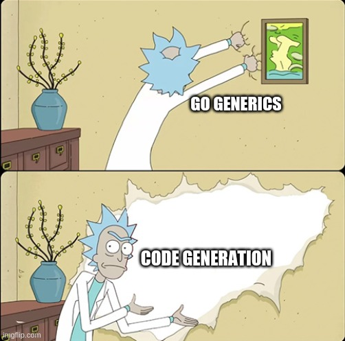
Presenter Notes
go get
go get does... everything:
- downloads packages
- resolves dependencies
- builds project
- installs binary
Presenter Notes
Debugging go mod / go get
go get repo@version
go get github.com/jinzhu/gorm@v1.9.11
- git clone github.com/jinzhu/gorm
- checkout on git tag v1.9.11
- find
go.modin root and do the above recursively
Presenter Notes
Debugging go mod (2)
go get repo/subdir@version
go get github.com/golang/protobuf/protoc-gen-go@v1.2.0
- git clone github.com/golang/protobuf
- checkout on git tag v1.2.0
- find
go.modin root and do the above recursively - narrow down context to protoc-gen-go subdirectory
Presenter Notes
Debugging go mod (3)
List go package dependencies:
go list -f "{{.ImportPath}} {{.Deps}}" github.com/jinzhu/copier
github.com/jinzhu/copier [context database/sql database/sql/driver
errors fmt internal/bytealg internal/cpu internal/fmtsort internal/oserror
internal/poll internal/race internal/reflectlite internal/syscall/unix
internal/testlog io math math/bits os reflect runtime runtime/internal/atomic
runtime/internal/math runtime/internal/sys sort strconv sync sync/atomic
syscall time unicode unicode/utf8 unsafe]
Presenter Notes
Debugging go mod (4)
Find dependencies or parents with exact version:
go mod graph | grep github.com/gogo/protobuf
github.com/.../common@v0.2.0 github.com/gogo/protobuf@v1.1.1
github.com/.../zipkin-go@v0.1.6 github.com/gogo/protobuf@v1.2.0
project/libs@v0.0.0 github.com/gogo/protobuf@v1.3.1
github.com/gogo/protobuf@v1.3.1 github.com/kisielk/gotool@v1.0.0
github.com/gogo/protobuf@v1.3.1 github.com/kisielk/errcheck@v1.2.0
parent dependencyformat- If many versions are requested, the maximum is taken.
Presenter Notes
Install versioned package globally
installing package@version package globally (binary in GOPATH) needs creating empty go.mod
1 2 3 4 5 6 7 | echo 'module temp' > go.mod go get github.com/onsi/ginkgo/ginkgo@v1.7.0 go get github.com/golang/protobuf/protoc-gen-go@v1.2.0 go get github.com/gogo/protobuf/protoc-gen-gogofaster@v1.3.1 rm go.mod |
Presenter Notes
invalid switch case
1 2 3 4 5 6 7 8 9 10 11 12 13 | func main() { name := "dupa" switch name { case "dupa": case "Dupa": fmt.Println("hello dupa.") return default: fmt.Println("default") return } fmt.Println("idź pan w chuj.") } |
Remember: Golang isn't Java!
Presenter Notes
type switch boilerplate
type_switch.go
1 2 3 4 5 6 7 8 9 10 11 12 13 14 15 16 17 18 19 20 21 22 23 24 25 26 27 28 29 30 31 32 33 34 35 36 37 38 39 40 41 | func UnknownToInt64(value interface{}) (int64, error) { switch value := value.(type) { case uint64: return int64(value), nil case uint32: return int64(value), nil case int64: return value, nil case int32: return int64(value), nil case float64: return int64(value), nil case float32: return int64(value), nil case bool: if value { return 1, nil } else { return 0, nil } case string: vali, err := strconv.Atoi(value) if err != nil { return 0, err } return int64(vali), nil case json.Number: vali, err := value.Int64() if err != nil { return 0, err } return vali, nil default: stringVal := fmt.Sprintf("%#v", value) vali, err := strconv.Atoi(stringVal) if err != nil { return 0, err } return int64(vali), nil } } |
Presenter Notes
alias types
1 2 3 4 5 6 7 8 9 10 11 12 13 14 15 16 | type alias32 int32 func main() { var aliased alias32 = 5 whatis(int32(5)) whatis(aliased) } func whatis(value interface{}) { switch value := value.(type) { case int32: fmt.Println(value, "int32") default: fmt.Println(value, "idz pan w chuj") } } |
type switch disregards alias types
Presenter Notes
buffering channel in goroutines
Sending more than channel size will cause goroutines to wait
1 2 3 4 5 6 7 8 9 10 11 12 13 14 15 16 17 18 19 20 | func main() { messages := make(chan string, 1) go sendDupa(messages, 1) go sendDupa(messages, 2) go sendDupa(messages, 3) time.Sleep(1 * time.Second) fmt.Println("len:", len(messages), "capacity:", cap(messages)) for i := 0; i < 3; i++ { fmt.Println("received:", <-messages) } } func sendDupa(messages chan string, id int) { fmt.Println("sending...") messages <- fmt.Sprintf("dupa %d", id) fmt.Println("sent") } |
Presenter Notes
modifyng iterated slice
1 2 3 4 5 6 7 8 | func main() { v := []int{1, 2, 3} for i := range v { v = append(v, i) fmt.Println(i) } fmt.Println(v) } |
Presenter Notes
implementing on non-pointer
1 2 3 4 5 6 7 8 9 10 11 12 13 14 15 16 17 18 19 20 21 22 23 24 25 26 27 28 29 30 | type I interface { print() } type Dupa1 struct {} type Dupa2 struct {} func (d *Dupa1) print() { fmt.Println("*Dupa1") } func (d Dupa2) print() { fmt.Println("Dupa2") } func NewDupa2() I { return Dupa2{} } func NewDupa1Ptr() I { return &Dupa1{} } func NewDupa2Ptr() I { return &Dupa2{} } func main() { NewDupa2().print() NewDupa1Ptr().print() NewDupa2Ptr().print() } |
implementing interface for non-pointer type also make it available for pointer types
Presenter Notes
range + defer
1 2 3 4 5 6 7 8 9 10 11 12 13 14 15 | type gopher struct { Num int } func (d *gopher) print() { fmt.Println(d) } func main() { gophers := []gopher{gopher{1}, gopher{4}, gopher{6}, gopher{9}} for _, g := range gophers { defer g.print() } } |
range reuses same memory address
Presenter Notes
reusing maps
1 2 3 4 5 6 7 8 9 10 11 12 13 14 15 16 17 18 19 20 21 22 23 24 25 | type Container struct { m map[string]string } func main() { a := map[string]string{} a["a"] = "A" b := a b["b"] = "B" fmt.Println("a =", a) fmt.Println("b =", b) c := Container{ m: map[string]string{}, } c.m["c"] = "C" d := c d.m["d"] = "D" fmt.Println("c =", c) fmt.Println("d =", d) } |
Presenter Notes
no parent method override
1 2 3 4 5 6 7 8 9 10 11 12 13 14 15 16 17 18 19 20 21 22 23 24 25 26 | func main() { var s son = son{} s.whoami() s.askYourself() } type father struct { } func (self father) whoami() { fmt.Println("I'm your father") } func (self father) askYourself() { fmt.Println("ask yourself...") self.whoami() } type son struct { father } func (self son) whoami() { fmt.Println("son") } |
Presenter Notes
strict function type checking
1 2 3 4 5 6 7 8 9 10 11 12 13 14 15 16 17 18 19 20 21 22 23 24 | type Base interface { Foo() } type Extended interface { Base Bar() } func main() { var b Base var e Extended b = e _ = b // dummy use bs := []Base{nil} es := []Extended{nil} bs[0] = es[0] bs = es // type mismatch, not assignable even elements are... _ = bs // dummy use } |
no support for any generics
Presenter Notes
Credits
- Tour of Go: https://tour.golang.org/
- Go Playground: https://play.golang.org/
- Go by Example: https://gobyexample.com/
- Effective Go: https://golang.org/doc/effective_go.html
- Language Specification: https://golang.org/ref/spec
- An Introduction to Programming in Go: https://www.golang-book.com/books/intro
Presenter Notes
Credits (2)
- The Go Blog: https://blog.golang.org
- The Evolution of a Go Programmer: https://github.com/SuperPaintman/the-evolution-of-a-go-programmer
- https://dave.cheney.net/2014/10/17/functional-options-for-friendly-apis
- presentation made with https://pypi.org/project/darkslide/